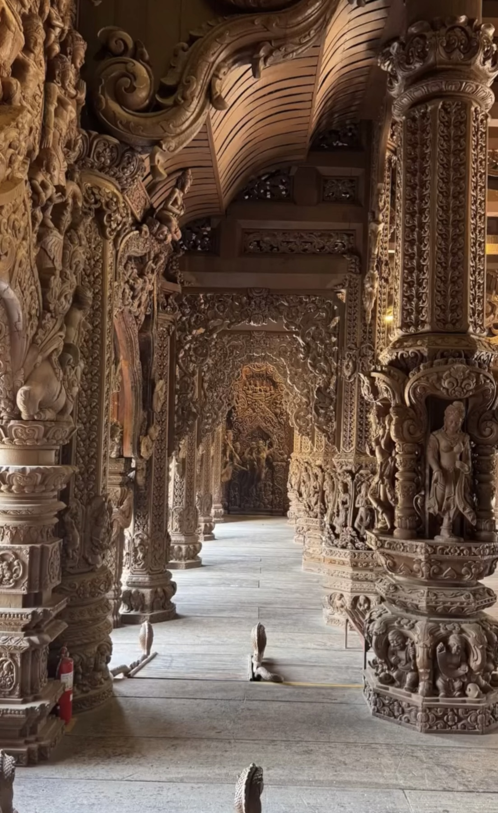
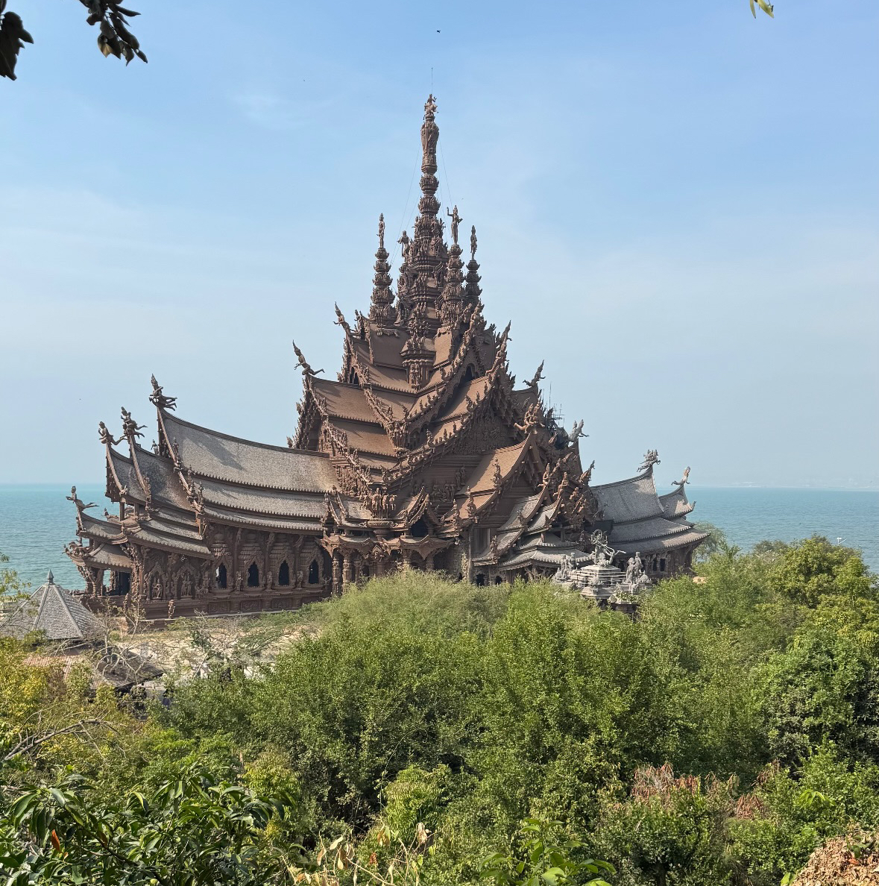
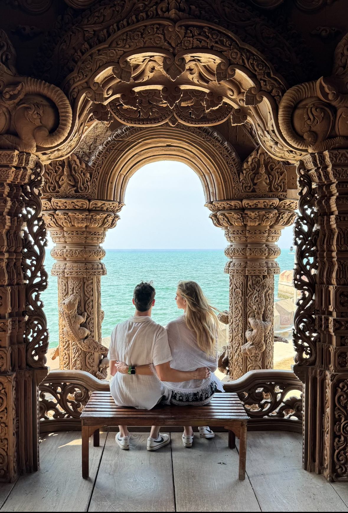
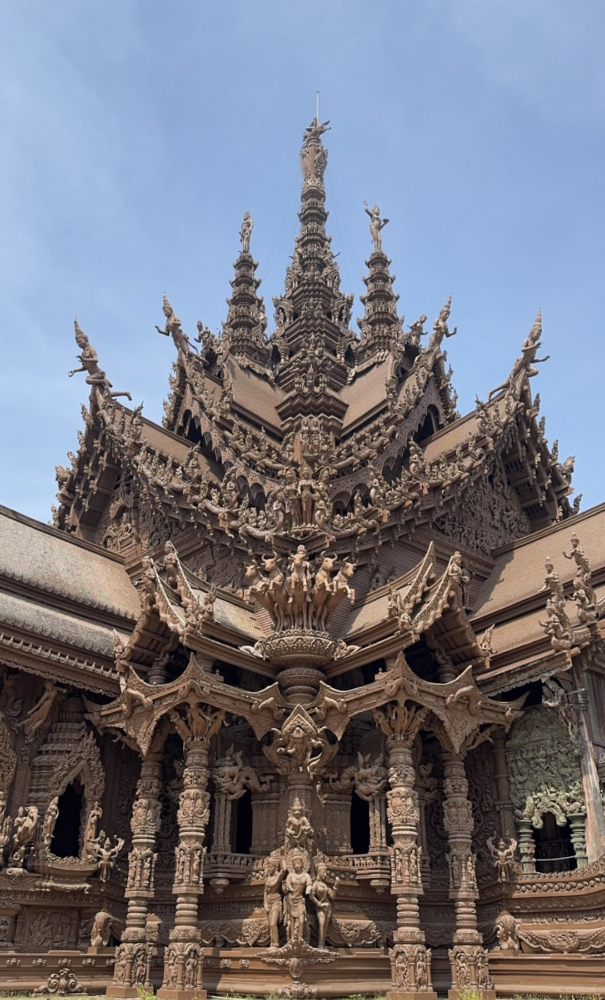

Pattaya
Pattaya is a vibrant coastal city in Thailand known for its beautiful beaches, lively nightlife, and a wide range of recreational activities. Located about an hour from Bangkok, Pattaya offers visitors a mix of relaxation and excitement, with stunning ocean views, water sports, and bustling markets. The city is also home to cultural attractions such as the Sanctuary of Truth, a magnificent wooden temple showcasing intricate carvings and traditional Thai architecture.
Must See
The Sanctuary of Truth: This awe-inspiring wooden structure is a must-visit attraction in Pattaya, featuring intricate carvings. This is hands down the coolest building I have ever seen in my life. The craftsmanship is incredible and the attention to detail is unmatched. If you visit Bangkok at all this is well worth a day trip.
Tutor Tips
Thailand Travel Tutor tips to help you plan and create your own memories in Thailand.
When visiting Pattaya, the nightlife can be quite lively and sometimes overwhelming, with numerous bars/clubs and people coming up to you on the street offering various services. Another thing I would like to note is before booking a hotel, check with Airbnb as there are some amazing deals to be found there that are often much cheaper than hotels. Lastly, if you plan to visit the Sanctuary of Truth, consider going early in the day to avoid crowds and have a more peaceful experience.